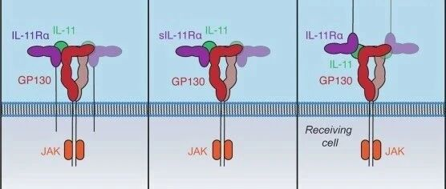
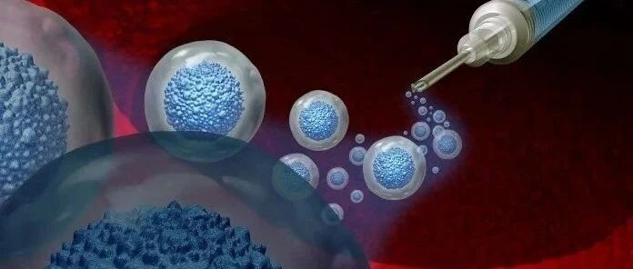
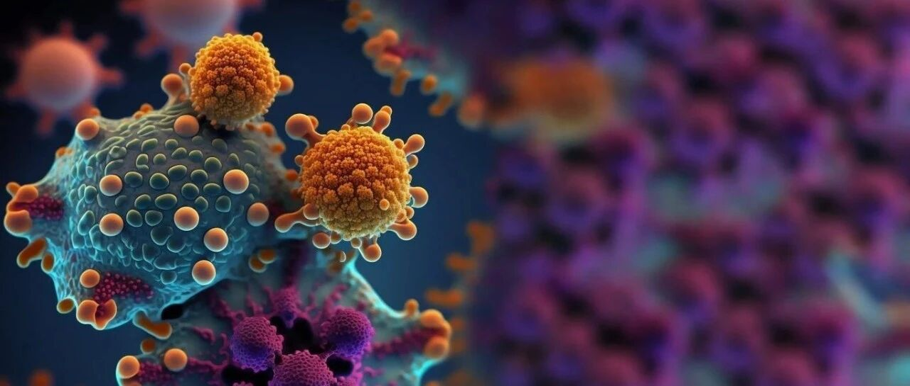
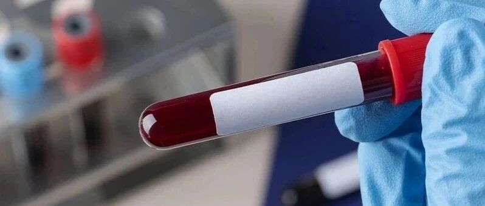

|
Zirui Chen
I am a first-year Master's student in Medicine at the Graduate School of Medical and Pharmaceutical Sciences, Chiba University, where I am supervised by Prof. Yosuke Kurashima.
My research interests lie in immunology and mucosal biology. Currently, I am investigating the role of mast cells in allergic progression, aiming to identify novel therapeutic targets for eradicating allergies.
Email / CV / ResearchGate / ORCID / Github |

|
Education |
|
Oct. 2025 - Present
Chiba University
M.S. student in Medicine
Graduate School of Medical and Pharmaceutical Sciences
|
|
|
Oct. 2020 - Jun. 2025
Zhejiang Chinese Medical University
B.Med. in Clinical Medicine
GPA: 3.8/4.0
|
Research InterestsI am generally interested in Immunology, Mucosal Biology, and Pathology. Most of my research is focused on elucidating the physiological role of mast cells in the progression of allergic diseases (Pathogenesis). My goal is to identify novel therapeutic targets for the eradication of allergies. |
Experience |
|
July 2025 – Sept. 2025
Wenzhou-Kean University
Research Intern
Wenzhou Municipal Key Laboratory for Applied Biomedical and Biopharmaceutical Informatics
Hosts: Xuechen Tian, Kaiyan Gong
|
News |
| 2026 Began intensive laboratory research training at Chiba University, working on animal experiments, sample processing, FACS/FCS analysis, ELISA, histology, data analysis, and group meeting presentations. | 2026 |
| 2025 Graduated with a B.Med. in Clinical Medicine from Zhejiang Chinese Medical University and transitioned toward graduate research in Japan. | 2025 |
| 2024 Completed advanced clinical coursework and internship-related training while preparing for graduate study and biomedical research in Japan. | 2024 |
| 2020 Entered Zhejiang Chinese Medical University and began undergraduate training in Clinical Medicine. | 2020 |
Selected Science Writing |
|
I have written more than one hundred Chinese popular science articles, totaling over one million words, for my WeChat public account Cell Kingdom, now renamed Beyond Time. |
|
|
 |
《Nature》：促炎蛋白IL-11或为延缓衰老全新靶点，可显著延寿四分之一！ Nature: IL-11 as a new target for slowing aging, with lifespan extended by nearly one quarter. |
| 世界首例！《Cell》：北大和南开大学团队开发CiPSC-islets移植，使患者成功脱离胰岛素，血糖恢复稳定 Cell: CiPSC-islet transplantation helps a patient discontinue insulin and restore stable blood glucose. | |
|
 |
历史首次！科学家追踪移植后的干细胞30年！《Nature》：重建患者血液时基本不发生基因突变，且越早接受移植，存活干细胞越多 Nature: scientists track transplanted stem cells for 30 years and examine mutation risk after blood reconstruction. |
|
 |
iPSC来源CAR-T，抗肿瘤Buff翻倍！《StemCell》：哈佛大学通过抑制G9a/GLP，使T细胞更好斗，且生存能力强 Stem Cell: iPSC-derived CAR-T cells gain stronger antitumor activity after G9a/GLP inhibition. |
| 《柳叶刀》：每10人就有1个糖尿病，超6成未接受任何治疗！过去二十年全球糖尿病发病率翻倍，治疗不平等现象加剧 The Lancet: global diabetes prevalence has doubled over two decades, with major treatment gaps. | |
|
 |
《Nature》子刊：新型全自动外泌体检测技术，实现脑癌血检仅需 2 美元， 1 小时内出结果！ Nature portfolio: an automated exosome test could enable low-cost, one-hour blood testing for brain cancer. |
Miscellanea |
|
Beyond my medical training, I have a deep fascination with technology and digital tools. I enjoy exploring electronic devices and software ecosystems—particularly Apple products and macOS, which I have studied extensively in both function and design. In my free time, I find relaxation and inspiration through video games, where I appreciate narrative world-building and the interactive dimension of storytelling. Outside of academics, I take joy in cycling, driving—especially observing innovations in new energy vehicles—and occasionally experimenting with cooking. These pursuits balance the intensity of clinical work and remind me to remain curious about life beyond the laboratory. |
|
Last updated Jun. 2026. Template from my dear cousin Guying Lin. |